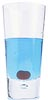

Lleno de vitaminas y minerales, este elíxir
combina los saludables beneficios del té verde con
una pizca de raíz de flor de manzanilla y raíz de jengibre.
Combina jugo de frambuesa con hierba de limón, corteza de cítricos y rosa mosqueta. Esta bebida helada te hará sentir una menta ágil y clara. 
Arádando y cerezas mezcladas en una base
de flor de saúco te dejarán en un estado
de una tranquila e intemporal felicidad.

Despierta a los sabores del arándano y del hibisco
en este elixir rico en vitamina C.